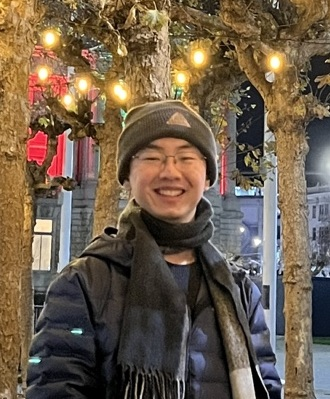

Email: hanyang_li AT berkeley DOT eduGoogle ScholarGitHub

I am a Ph.D. candidate in the Department of Industrial Engineering and Operations Research (IEOR) at the University of California, Berkeley, advised by Professor Ying Cui.
My research focuses on theoretically grounded numerical methods for optimization and decision-making in large-scale complex systems and on the computational foundations of AI, particularly methods for training LLMs at low precision and compressing them for efficient inference.
I am on the 2026–2027 academic job market.
Submitted, 2026
Submitted, 2026
Submitted, 2026
Submitted, 2026